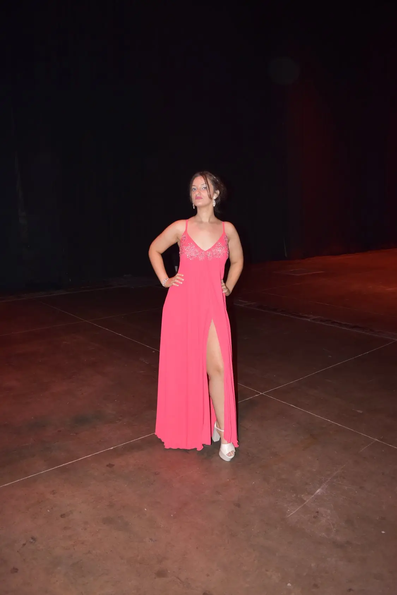
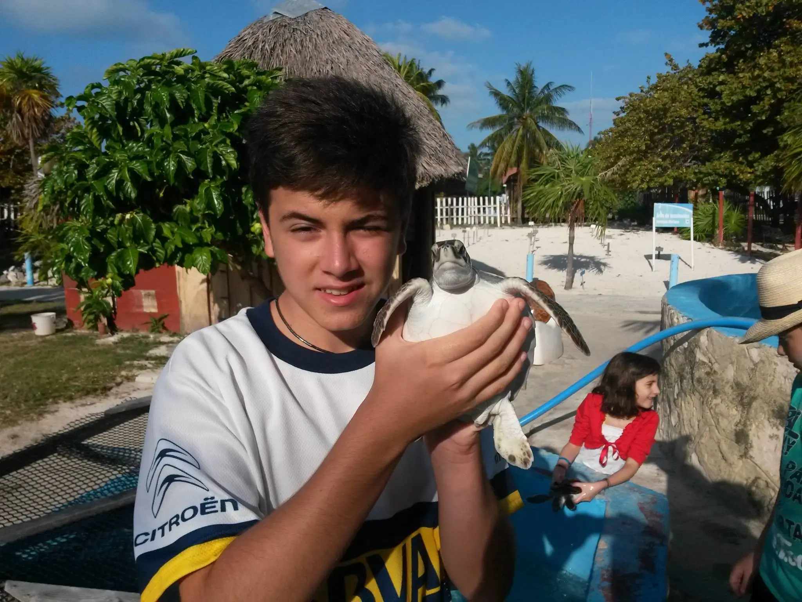

<title>100 proyectos JS 01 - Tinder Swipe</title>

<main>
    <section>
        <header>
            
        </header>

        <div class="cards">
            <article>
                
                <h2>Abril <span>22</span></h2>
                <div class="choice nope">NOPE</div>
                <div class="choice like">LIKE</div>
            </article>

            <article>
                
                <h2>Juan Ignacio <span>23</span></h2>
                <div class="choice nope">NOPE</div>
                <div class="choice like">LIKE</div>
            </article>

            <span>
                No hay mas personas cerca de ti... <br />
                Vuelve a intentarlo mas tarde
            </span>
        </div>

        <footer>
            <button class="is-undo" aria-label="undo"></button>
            <button class="is-remove is-big" aria-label="remove"></button>
            <button class="is-start" aria-label="start"></button>
            <button class="is-fav is-big" aria-label="fav"></button>
            <button class="is-zap" aria-label="zap"></button>
        </footer>
    </section>
</main>

<style>
    *, *::before, *::after {
        box-sizing: border-box;
        margin: 0;
        padding: 0;
    }

    body {
        font-family: system-ui, -apple-system, BlinkMacSystemFont, 'Segoe UI', Roboto, Oxygen, Ubuntu, Cantarell, 'Open Sans', 'Helvetica Neue', sans-serif;
        display: grid;
        place-content: center;
        min-height: 100vh;
        overflow: hidden;
        user-select: none;
        background: #e5e5e5;
    }

    main {
        background: url('./iphone.webp') no-repeat;
        background-size: contain;
        width: 320px;
        height: 640px;
        display: flex;
        filter: drop-shadow(0 0 10px rgba(0, 0, 0, 0.3));
    }

    section {
        background-color: #f6f6f6;
        width: 100%;
        border-radius: 32px;
        display: flex;
        gap: 24px;
        flex-direction: column;
        overflow: hidden;
        position: relative;
        padding: 16px 6px;
        margin: 24px;
    }

    header {
        display: flex;
        justify-content: center;
        
        & img {
            width: 24px;
            height: 24px;
        }
    }

    footer {
        display: grid;
        grid-template-columns: repeat(5, 1fr);
        gap: 12px;
        padding: 0 24px;
        justify-content: center;
        align-items: center;

        & button {
            background: url('./tinder-icons.webp') no-repeat;
                /* tecnica Sprite, una sola imagen, y la divido */
            background-position: 0px 0px;
            background-size: 175px;
            height: 32px;
            width: 32px;
            border-radius: 50%;
            border: 1px solid #ccc;
            border: 0;
            cursor: pointer;
            transition: scale .3s ease;

            &:hover {
                scale: 1.3;
            }

            &.is-big {
                background-size: 250px;
                height: 48px;
                width: 48px;
            }

            &.is-undo {
                background-position: -140px 0;
            }

            &.is-remove {
                background-position: -155px 0;
            }

            &.is-fav {
                background-position: -46px 0;
            }

            &.is-start {
                background-position: -70px 0;
            }
        }
    }

    .cards {
        position: relative;
        width: 100%;
        height: 100%;
        margin: 0 auto;

        & > span {
            display: grid;
            place-content: center ;
            color: #777;
            font-size: 14px;
            text-align: center;
            height: 100%;
            z-index: -1;
        }

        & article {
            border-radius: 8px;
            box-shadow: 0 0 10px rgba(0, 0, 0, .3);
            cursor: grab;
                /* aparece la manito para agarrar */
            overflow: hidden;
            position: absolute;
            inset: 0;
            width: 100%;
            height: 100%;
            z-index: 2;
            /* will-change: transform rotate; */
                /* lo que supone es mejorar el rendimiento de las imagenes */

            &.go-left {
                transform: translateX(-150%) rotate(-30deg) !important;
            }

            &.go-right {
                transform: translateX(150%) rotate(30deg) !important;
            }

            &.go-left, &.go-right {
                transition: transform .3s ease, rotate .3s ease;
            }

            &.reset {
                transition: transform .3s ease;
                transform: translateX(0) !important;
            }

            & .choice {
                border-radius: 8px;
                color: black;
                border: 3px solid;
                z-index: 9999;
                position: absolute;
                top: 32px;
                right: 16px;
                opacity: 0;
                padding: 4px 8px;
                font-size: 24px;
                font-weight: bold;
                width: fit-content;
                text-shadow: 0 0 10px rgba(0, 0, 0, .3);
                transition: opacity .1s ease, transform .1s ease;

                &.nope {
                    border-color: #ff6b6b;
                    color: #ff6b6b;
                    transform: rotate(30deg);
                }
                
                &.like {
                    border-color: #63ff68;
                    color: #63ff68;
                    left: 16px;
                    transform: rotate(-30deg);
                }
            }

            & img {
                width: 100%;
                height: 100%;
                object-fit: cover;
            }

            & h2 {
                color: white;
                position: absolute;
                inset: 0;
                display: flex;
                align-items: flex-end;
                height: 100%;
                width: 100%;
                padding: 16px;
                z-index: 3;
                background: linear-gradient(
                    to top, 
                    #00000088 20%, 
                    transparent 40%
                );
            }

            & span {
                margin-left: 8px;
                font-size: 22px;
                line-height: 1.4;
                font-weight: 400;
            }
        }
    }
</style>

<script>
    const DECISION_THRESHOLD = 75 // distancia minima para tomar una decision

    let isAnimating = false
    let pullDeltaX = 0 // distancia que la card se esta arrastrando
    
    function startDrag (e) {
        if (isAnimating) return

        // get the first article element 
        const actualCard = event.target.closest('article') // recupero el article mas cercano al click
        if(!actualCard) return // si no hay article, no hago nada

        // get initial position of mouse or finger
        const startX = event.pageX ?? event.touches[0].pageX 
        
        // listen the mouse and touch movements
        document.addEventListener('mousemove', onMove)
        document.addEventListener('mouseup', onEnd)

        document.addEventListener('touchmove', onMove, { passive: true })
        document.addEventListener('touchend', onEnd, { passive: true })
        
        function onMove (event) {
            // current position
            const currentX = event.pageX ?? event.touches[0].pageX
    
            // the distance between the initial and current position
            pullDeltaX = currentX - startX

            // no hay distancia recorrida
            if (pullDeltaX === 0) return
    
            // change the flag to indicate we're animating
            isAnimating = true
            
            // calculate the rotation of the card using the distancia
            const deg = pullDeltaX / 14 // seria como el maximo de grados que se puede rotar
            
            //apply the transformation to the card
            actualCard.style.transform = `translateX(${pullDeltaX}px) rotate(${deg}deg)`
            
            // change the cursor to grabbign
            actualCard.style.cursor = 'grabbing'

            // change opacity of the choice info 
            const opacity = Math.abs(pullDeltaX) / 100
            const isRight = pullDeltaX >= 0

            const choiceEl = isRight 
                ? actualCard.querySelector('.choice.like') 
                : actualCard.querySelector('.choice.nope')

            choiceEl.style.opacity = opacity
        }
    
        function onEnd (event) {
            // remove the event listeners
            document.removeEventListener('mousemove', onMove)
            document.removeEventListener('mouseup', onEnd)
            document.removeEventListener('touchmove', onMove)
            document.removeEventListener('touchend', onEnd)
    
            // know if user took a decision
            const decisionMade = Math.abs(pullDeltaX) >= DECISION_THRESHOLD

            if (decisionMade) {
                const goRight = pullDeltaX >= 0
                const goLeft = !goRight

                // add class acording to the decision 
                actualCard.classList.add(goRight ? 'go-right' : 'go-left')
                actualCard.addEventListener('transitionend', () => {
                    actualCard.remove()
                }, { once: true })
                    // el once:true es para que se ejecute una sola vez (suscribirse al evento)
            } else {
                // reset the card position
                actualCard.classList.add('reset')
                actualCard.classList.remove('go-right', 'go-left')
                actualCard.querySelectorAll('.choice').forEach(
                    choice => choice.style.opacity = 0
                )
            }

            // reset the variables
            actualCard.addEventListener('transitionend', () => {
                actualCard.removeAttribute('style')
                actualCard.classList.remove('reset')

                pullDeltaX = 0
                isAnimating = false
            })
        }
    }

    document.addEventListener('mousedown', startDrag)
    document.addEventListener('touchstart', startDrag, { passive: true })
</script>